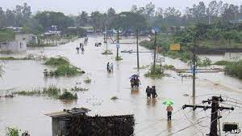

East Coast

Affected regions:
Andhra Pradesh, Odhisa, West Bengal
Recent disaster
Name : Cyclone Flood
Date : Sep 27, 2021
Cause : A cyclone flooded parts of India's eastern coast with heavy rains and uprooted thousands of
trees and power poles, knocking out electricity, before weakening to a deep depression Monday.
Response : Authorities in two coastal states had been on high alert as the cyclone with sustained winds
blowing up to 85 kilometers per hour (53 mph) hit the eastern seaboard late Sunday evening. National Disaster
Response Force teams were deployed to the eastern state of Odisha and the southern state of Andhra Pradesh,
where thousands of people were evacuated.
Damage :Heavy rains lashed the town of Kalingapatnam in Andhra Pradesh state on Sunday, swamping roads
and marooning hundreds of villages. One fisherman was missing and another was injured when their boat was hit by
the high tide, but no deaths have been reported from the storm.